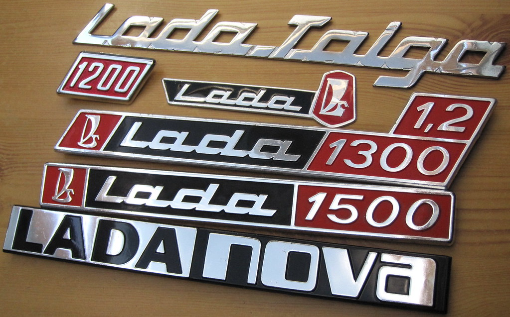

Szovjet autó ikon: A Lada autómárka, amelyet hivatalosan AvtoVAZ-ként ismernek, a Szovjetunióban, majd később Oroszországban vált ikonikus márkává. A Lada autók jellemzően egyszerűek voltak, könnyen karbantarthatók és strapabíróak, amiért sokan kedvelték őket.
Lada Niva - terepjáró legendák: A Lada Niva különleges helyet foglal el a terepjárók világában. Ez a kis terepjáró a 70-es évek végén került piacra, és gyorsan népszerűvé vált a robusztus kialakítása és a megbízható teljesítménye miatt. Még ma is sokan kedvelik a Nivát a világ különböző részein.

Olcsó autók a tömegeknek: A Lada autók általában alacsony áruk miatt voltak vonzóak a vásárlók számára. Ezek a járművek egyszerű kialakítással rendelkeztek, ami alacsonyabb gyártási költségeket eredményezett, így megfizethetőek voltak a szélesebb közönség számára.
Exportálás a világ minden tájára: Bár eredetileg a Szovjetunióban kezdték el gyártani, a Lada autókat hamarosan exportálták szerte a világba. Számos országban, különösen Kelet-Európában és az ázsiai régiókban, a Lada autók nagyon népszerűek voltak a megfizethető áruk és a könnyű javíthatóság miatt.

Kihívások és fejlesztések: Bár a Lada autók híresek a megbízhatóságukról és a strapabírásukról, a márkát időnként kritizálták a minőségi problémák miatt. Azonban az elmúlt években az AvtoVAZ jelentős erőfeszítéseket tett annak érdekében, hogy javítsa a minőséget és a tervezést, és lépést tartson a modern autóipar változásaival.
Kultusz körülöttük: Noha a Lada autók sokak számára csak egyszerű járművek, számos rajongótáboruk van világszerte. Az elkötelezett rajongók a Lada autókat nem csak közlekedési eszközként, hanem egyfajta kultikus jelképként tekintik, amelyek hűségesen szolgáltak és szolgálnak a mindennapi életben.